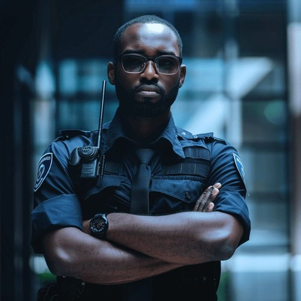
01
Postura e comunicação
Apresentação pessoal, linguagem corporal, comunicação clara e atendimento respeitoso.
Falar no WhatsAppPrepare sua equipe ou valorize seu currículo com um treinamento direto, prático e focado na rotina real de portarias, condomínios e empresas.
O agente de portaria é a primeira impressão e uma das principais barreiras de segurança de uma empresa ou condomínio. Ele precisa controlar acessos, orientar pessoas, registrar informações e agir com equilíbrio em situações de risco.
O treinamento trabalha postura, comunicação, procedimentos operacionais, atendimento humanizado, dinâmicas práticas e gestão de ocorrências.
Tirar dúvidas pelo WhatsApp →
Apresentação pessoal, linguagem corporal, comunicação clara e atendimento respeitoso.
Falar no WhatsApp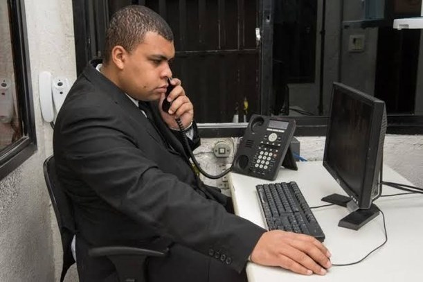
Controle de acesso, conferência de documentos, pedestres, veículos e fornecedores.
Falar no WhatsApp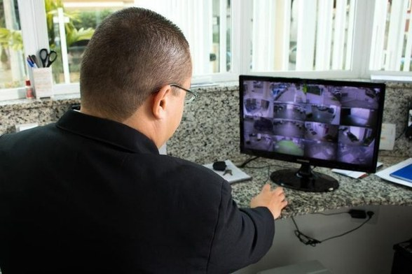
Checklist no posto, atenção aos equipamentos, rondas e registro das informações.
Falar no WhatsApp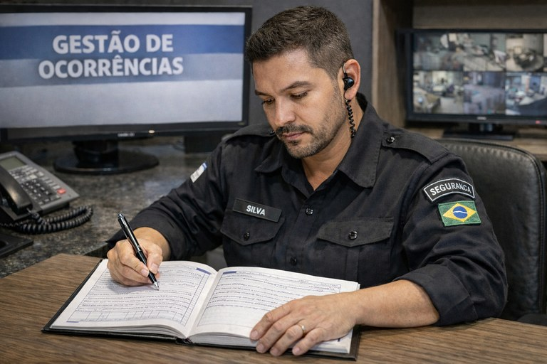
Comunicação objetiva, livro de ocorrências, relatório formal e ações em emergências.
Falar no WhatsAppGestor de Segurança
Apresentação pessoal, comunicação clara e respeitosa, tom de voz adequado e linguagem corporal.
Tenho interesseConferência de documentos, controle de acesso, comunicação rápida de ocorrências e atenção constante.
Tenho interesse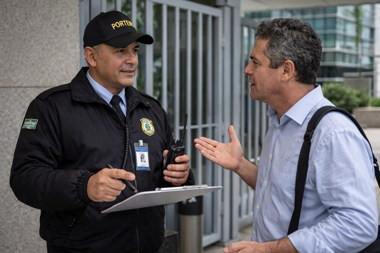
Simulações com visitantes sem autorização, ex-funcionários, moradores e prestadores de serviço insistentes.
Tenho interesse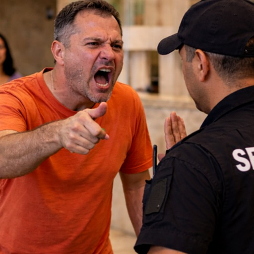
Discrição, respeito, sigilo profissional e resolução de conflitos com educação e segurança.
Tenho interesse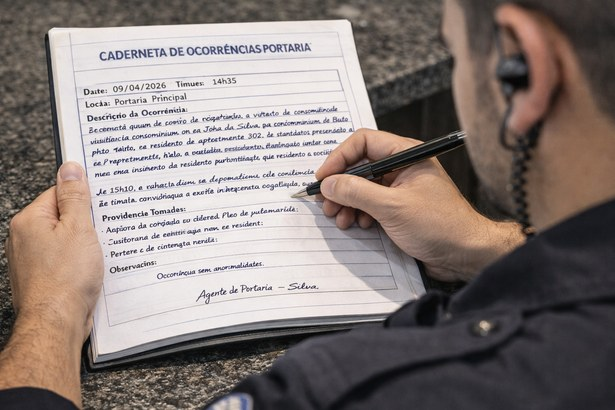
Preenchimento do livro de ocorrências, relato formal, comunicação objetiva e situações de emergência.
Tenho interesse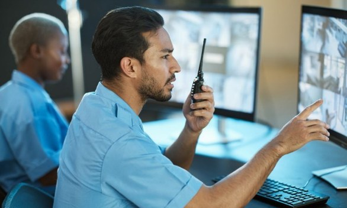
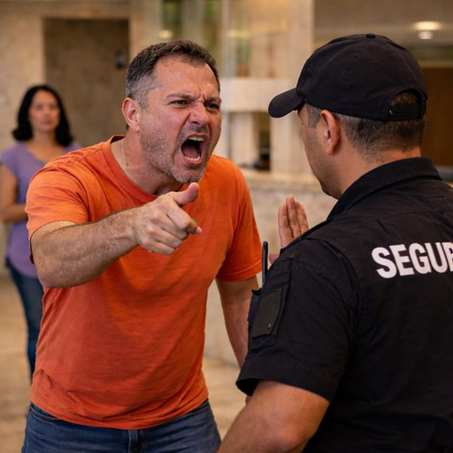
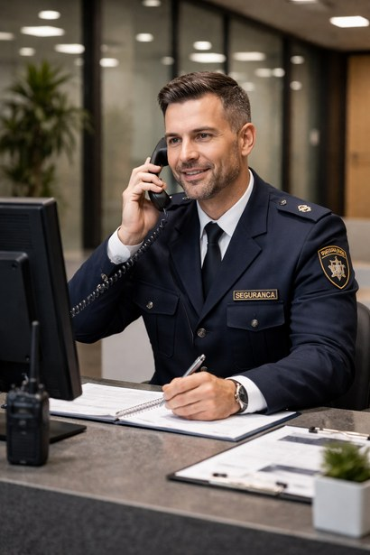
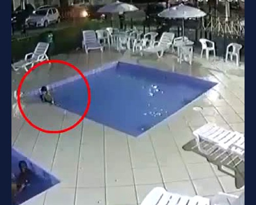
Clique no botão e fale direto no WhatsApp para receber as informações do treinamento.
Enviar mensagem para 5586999562455